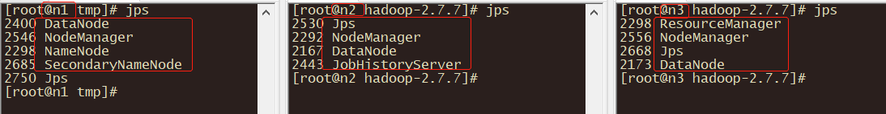

1. 集群安装
1.1. Purpose
本节描述如何搭建一个完全分布式的Hadoop集群，以3台服务器举例。可扩展到若干节点。本文档不涉及安全或高可用性等主题。
1.2. Prerequisites
参考：搭建高可用集群时Linux环境必需配置的先决条件，先将Linux基础环境搭建成功。
1.3. Installation
点击下载相应版本，本文档采用2.7.7。安装Hadoop集群需要解压所软件在所有的节点上，所以将硬件的功能进行划分很重要。
1.4. Component Planning
建议将NameNode和ResourceManager指定分开在两台节点上，这样即使某台节点挂了也不至于导致NameNode和ResoureManager同时挂掉。其余的节点则同时充当DataNode和NodeManager。
| n1 | n2 | n3 |
|---|---|---|
| NameNode/DataNode | DataNode | DataNode |
| NodeManager | NodeManager | ResourceManager/NodeManager |
| SecondaryNameNode | HistoryServer |
1.5. Configure Hadoop
HDFS的守护程序是NameNode，SecondaryNameNode和DataNode。
YARN守护程序是ResourceManager，NodeManager和WebAppProxy。如果要使用MapReduce，则MapReduce作业历史服务器也将运行。对于大型安装，它们通常在单独的主机上运行。
所有配置文件都在路径：$HADOOP_HOME/etc/hadoop 中。
1.5.1. 配置JAVA_HOME变量
在hadoop-env.sh、yarn-env.sh、mapred-env.sh中指定JAVA_HOME的路径。
1.5.2. HDFS
配置hdfs文件系统的主机和端口，端口号在hadoop1.x版本默认使用的是9000，而在hadoop2.x中默认使用的是8020。
以及hadoop分布式集群经过格式化后数据保存的位置。
core-site.xml中配置：
<property>
<name>fs.defaultFS</name>
<value>hdfs://n1:8020</value>
</property>
<!-- haddop.tmp.dir默认值为/tmp。而/tmp中的不常用文件可能会被Linux删除。 -->
<property>
<name>hadoop.tmp.dir</name>
<value>/opt/cluster/hadoop-2.7.7/data/tmp</value>
</property>
在静态web页面上呈现内容时，以参数hadoop.http.staticuser.user指定的用户名作为筛选条件，默认dr.who。
core-site.xml中配置：
<property>
<name>hadoop.http.staticuser.user</name>
<value>renwujie</value>
</property>
测试环境可以关闭hdfs中文件访问权限，默认为true。
hdfs-site.xml中配置：
<property>
<name>dfs.permissions.enabled</name>
<value>false</value>
</property>
1.5.3. YARN
配置ResourceManager的主机名；以及web访问地址。
yarn-site.xml中配置：
<property>
<name>yarn.resourcemanager.hostname</name>
<value>n3</value>
</property>
<!-- RM Web UI的默认值就是8088 -->
<property>
<name>yarn.resourcemanager.webapp.address</name>
<value>${yarn.resourcemanager.hostname}:8088</value>
</property>
配置执行MapReduce job的框架。可选值：local，classic，yarn。
mapred-site.xml 中配置：
<property>
<name>mapreduce.framework.name</name>
<value>yarn</value>
</property>
如果在mapred-site.xml中设置了mapreduce.framework.name为yarn的话，就需要配置yarn.nodemanager.aux-services参数了。该参数用于指定执行MapReduce job时，yarn使用的shuffle（混淆）技术。如果使用的话值为mapreduce_shuffle。
yarn-site.xml中配置：
<property>
<name>yarn.nodemanager.aux-services</name>
<value></value>
<!--<value>mapreduce_shuffle</value>-->
<description>A comma separated list of services where service name should only
contain a-zA-Z0-9_ and can not start with numbers</description>
</property>
1.5.4. SecondaryNameNode
hdfs-site.xml中配置：
<property>
<name>dfs.namenode.secondary.http-address</name>
<value>n1:50090</value>
</property>
1.5.5. HistoryServer
mapred-site.xml中配置：
<property>
<name>mapreduce.jobhistory.address</name>
<value>n2:10020</value>
</property>
<property>
<name>mapreduce.jobhistory.webapp.address</name>
<value>n2:19888</value>
</property>
1.5.6. 日志聚合
yarn-site.xml中配置：
<property>
<name>yarn.log-aggregation-enable</name>
<value>true</value>
</property>
<!-- 聚合日志保留时间 -->
<property>
<name>yarn.log-aggregation.retain-seconds</name>
<value>106800</value>
</property>
1.5.7. Slaves文件
slaves文件用于指定DataNode和NodeManager所在节点，每行一个。
n1
n2
n3
1.6. Operating the Hadoop Cluster
完成以上配置后，将整个$HADOOP_HOME文件分发到集群中的所有节点上。分发前删除掉：$HADOOP_HOME/share/doc目录。因为该目录只是一些参考文档，且很大。分发时将占用大量带宽，浪费时间。
scp -r $HADOOP_HOME root@n2.com.rwj:/opt/
scp -r $HADOOP_HOME root@n3.com.rwj:/opt/
1.6.1. 格式化集群
要启动hadoop集群，需要将HDFS和YARN都启动。
首次启动HDFS时，需要将其格式化。在NameNode机器所在节点上执行：
$ HADOOP_HOME/bin/hdfs namenode -format
1.6.2. 启动/关闭集群
以下所有命令是启动命令，如果是关闭，将start替换为stop即可。启动时一边启动一边用命令jps查看相应进程是否启动成功。
[info]注意
以下命令单独启动某进程时，必需要在相应的节点上进行该命令的操作。
启动HDFS：
# 使用
$HADOOP_HOME/sbin/hadoop-daemon.sh start namenode
$HADOOP_HOME/sbin/ hadoop-daemon.sh start datanode
# 或者
$HADOOP_HOME/sbin/start-dfs.sh
启动YARN：
# 使用
$HADOOP_HOME/sbin/yarn-daemon.sh start resourcemanager
$HADOOP_HOME/sbin/yarn-daemon.sh start nodemanager
# 或者
$HADOOP_HOME/sbin/start-yarn.sh
启动SecondaryNamenode
$HADOOP_HOME/sbin hadoop-daemon.sh start secondarynamenode
启动HistoryServer
$HADOOP_HOME/bin/mapred --daemon start historyserver
#或者
$HADOOP_HOME/sbin/mr-jobhistory-daemon.sh start historyserver
最终，对应于开始的组件规划（Component Planning）；每台节点上都应该看到相应的进程启动并稳定运行。

1.7. Web Interface
成功启动集群后即可查看对应组件的Web UI是否可以正常访问。
| Daemon | Web Interface | Notes |
|---|---|---|
| NameNode | https://n1:50070 | 默认50070 |
| ResourceManager | https://n3:8088 | 默认8088 |
| MapReduce JobHistory | https://n2:19888 | 默认19888 |